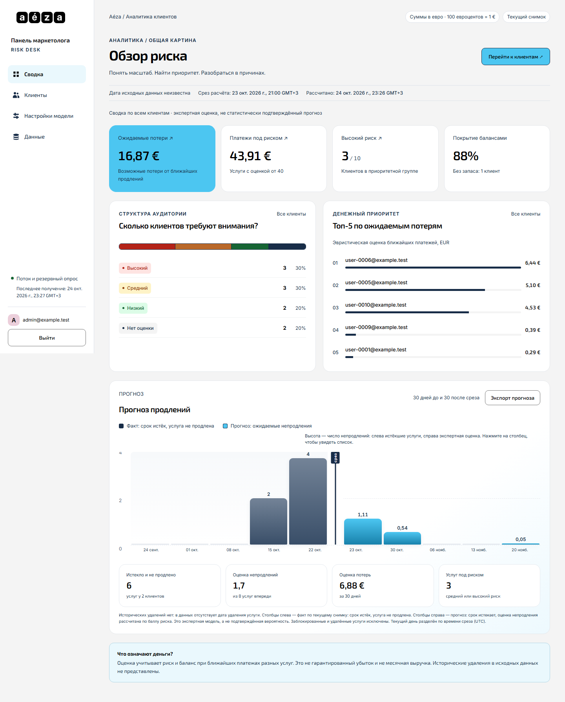
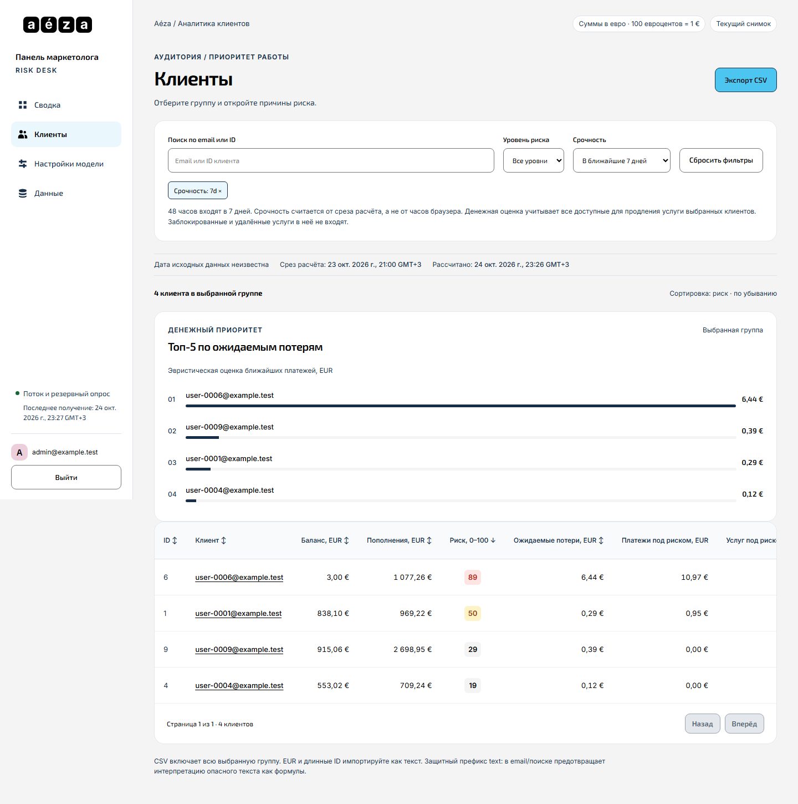
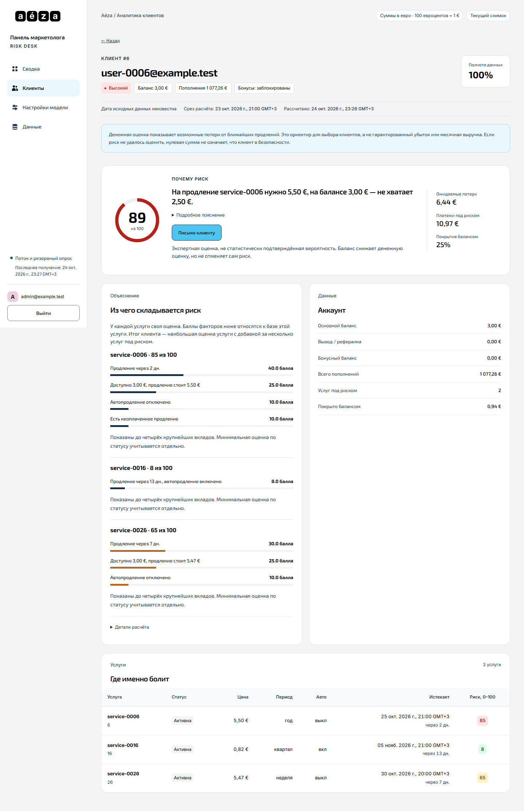
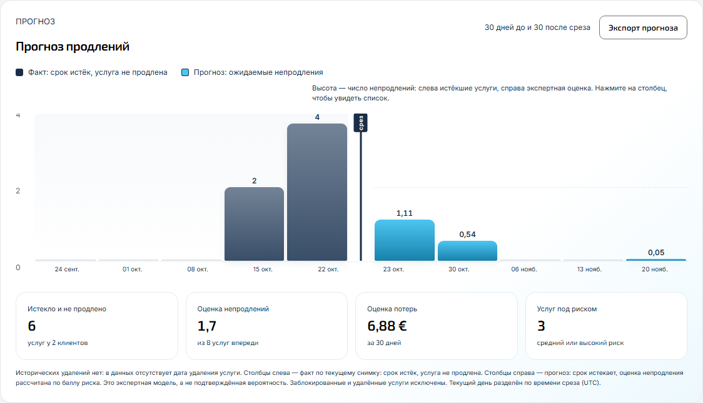
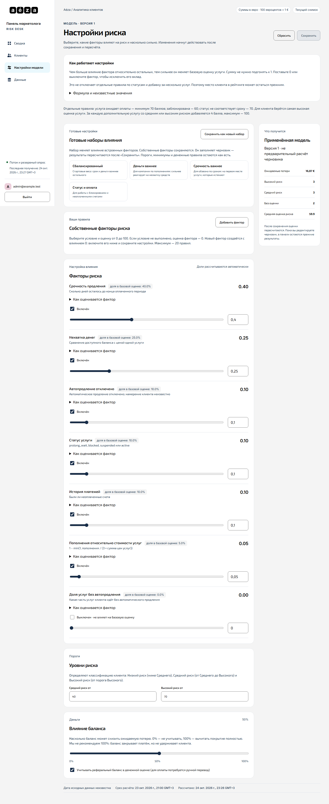
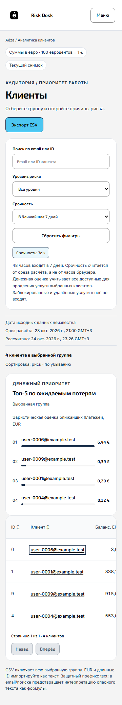

1. Бизнес-контекст и решаемая задача
Кейс разработан в рамках Хакатона РНД (уровень Middle). В бизнесе хостинг-провайдеров удержание существующих клиентов в 5–7 раз дешевле привлечения новых. Однако служба поддержки и retention-маркетинг обычно реагируют постфактум — когда услуга уже не продлена.
Система Risk Desk отвечает на 3 главных вопроса бизнеса:
- Кому писать в первую очередь? Формирование рейтинга клиентов по рассчитанному баллу риска (0–100) и фильтрация по срочности (ближайшие 7, 14, 30 дней).
- Почему клиент уходит? Наглядная декомпозиция причин: нехватка баланса на счете, отключенный автоплатеж, скорое окончание дорогой услуги или падение активности.
- Сколько денег на кону? Точная денежная оценка риска (Expected Financial Loss) в евро и рублях, показывающая реальный объем выручки под угрозой.
2. Математическая модель и расчёт риска
Каждому клиенту начисляется нормализованный балл риска (Risk Score) от 0 до 100 на основе весов факторов: срока до истечения услуги, достаточности средств на балансе, флага автопродления и стоимости услуг.
Ползунки весов в реальном времени: Особенность решения — веб-панель настроек модели. Маркетолог или аналитик может прямо в интерфейсе изменить вес любого фактора (например, придать больший приоритет клиентам с отключенным автопродлением), и система на лету пересчитывает скоринг всей клиентской базы без перезапуска сервера.
Прогноз непродлений: Встроенный модуль анализа временных рядов сопоставляет исторический процент непродления услуг и строит прогнозный тренд на следующие 30 дней.
3. Архитектура сервиса и потоки данных
Полная контейнеризация стека: запуск в один клик через docker compose up --build
- Backend: Асинхронный REST API на FastAPI и Python 3.11. Строгая валидация входящих и исходящих схем данных через Pydantic v2, работа с базой данных через SQLAlchemy 2.0. Документация OpenAPI / Swagger генерируется автоматически.
- Frontend: Современный SPA на React, TypeScript и Vite. Быстрый поиск, динамическая сортировка, компонентная верстка с поддержкой мобильных устройств и планшетов. Экспорт отфильтрованных когорт в CSV для дальнейшей работы в CRM или отправки email-рассылок.
- Авторизация и безопасность: Поддержка корпоративного SSO через Keycloak (OAuth2 / OIDC), а также быстрый беспарольный вход для жюри по QR-коду и JWT.
- Инфраструктура: Единая сборка через Docker Compose — запуск бекенда, фронтенда и базы данных одной командой
docker compose up --build.
4. Интерфейс системы

Сводный дашборд: ключевые метрики, ожидаемые финансовые потери, доля платежей под риском и 30-дневный прогноз.

Клиенты под риском: фильтрация по порогу срочности (7/14/30 дней), поиск по имени и сумме риска, сортировка.

Карточка клиента: детальная раскладка баллов, статус автопродления, баланс и перечень подключенных услуг.

График непродлений: сопоставление фактических исторических данных и прогнозных значений.

Кастомизация модели: регулировка влияния весов факторов риска с помощью ползунков в реальном времени.

Мобильная адаптивность: полноценное отображение списков и карточек на узких экранах смартфонов.
5. Результаты и эффекты
Создан полноценный продакшн-ready аналитический инструмент, готовый к развертыванию на инфраструктуре любого хостинга. Система позволяет снизить отток клиентов на ранней стадии за счет автоматического выявления критических аккаунтов за 7–14 дней до срока платежа.